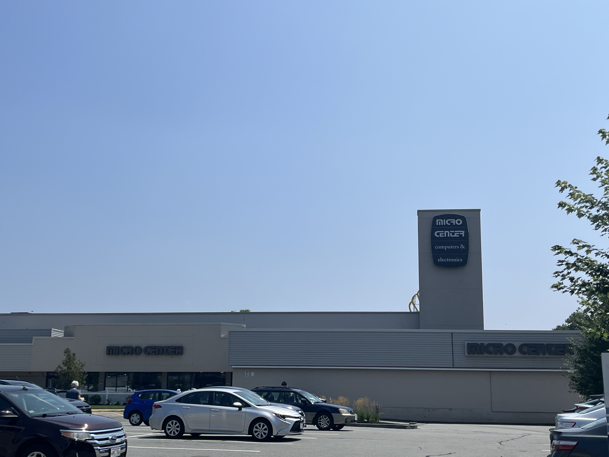

<br>
<div class="vidDiv">
<h2>Demo Video:</h2><br>
<iframe width="700px" height= 500px src="https://www.youtube.com/embed/v7RBwEGP25M">
</iframe>
</div>
#### Proposals
<div class="myDiv">
<br><p style = "color:snow;">
My first idea for my final project is a drone that can hold light weight things with some type of arm/hand. I will build a basic drone like shown in the video tutorial, but buff it up enough so that the drone can hold an arm/hand that function like shown in the second video. This drone will also follow you in order to make transportation of items less annoying.
</p><br>
</div>
<div class="vidDiv">
<iframe width="420" height="345" src="https://www.youtube.com/embed/DeSDjjicGWY">
</iframe>
<iframe width="420" height="345" src="https://www.youtube.com/embed/4orPPtsaHpc">
</iframe>
<iframe width="420" height="345" src="https://www.youtube.com/embed/T6kaU2sgPqo">
</iframe>
<br>
<div style = position:relative; top:20px;><img src = "https://www.cnet.com/a/img/resize/f464a55dbe70782e15b20fd3698540734ff77dad/hub/2016/09/13/f3185c26-be79-4a45-9013-c1c1168aa5d9/pd6b-aw-arm01-1024x683.jpg?auto=webp&fit=crop&height=675&width=1200" width=420px alt=DroneProjectProposal ></div><br>
<a target= blank href="https://www.cnn.com/2016/09/13/tech/prodrone-claw-arm-drone/index.html"> <br>
<button><h2>Pro Drone Source Website</h2></button> <br> </a> <br>
</div>
<div class="myDiv">
<br><p style = "color:snow;">
My Second Idea for the final project is called the GPS bot. It is a small robot that guides you through the roads if you give it a location to go to. It will track cars and you. It can travel between locations at a speed that one can control through the controller or app. It is like a robot version of Google maps!
</p><br>
</div>
<div class="vidDiv">
<iframe width="420" height="345" src="https://www.youtube.com/embed/yVpqi-oyFOg">
</iframe>
<iframe width="420" height="345" src="https://www.youtube.com/embed/xcsT8nNE3b4">
</iframe>
<br><img src = "https://content.instructables.com/FZ4/O061/JGMJCBW5/FZ4O061JGMJCBW5.png?auto=webp" width=450px alt=GPSBotProjectProposal ><br>
<a target= blank href="https://www.instructables.com/How-to-Build-a-GPS-Guided-Robot/"> <br>
<button><h2>GPS Robot Source Website</h2></button> <br> </a> <br>
</div>
<div class="myDiv">
<br><p style = "color:snow;">
My Third and Final idea for the final project is a type of Roomba but it is a lawnmower instead of a carpet cleaner. So basically, an automatic mini lawnmower that recharges itself and avoids going outside by checking the weather and moisture levels
</p><br>
</div>
<div class="vidDiv">
<iframe width="420" height="345" src="https://www.youtube.com/embed/KxbAU6e5BAs">
</iframe>
<iframe width="420" height="345" src="https://www.youtube.com/embed/tWVT6DlO3tw">
</iframe>
<iframe width="420" height="345" src="https://www.youtube.com/embed/nqY_yuTXPb0">
</iframe>
<br><img src = "https://images.immediate.co.uk/production/volatile/sites/4/2021/12/Flymo-EasiLife-150-GO-Robotic-Lawn-Mower-11d8ed2.jpg" width=500px alt=AutomaticMiniLawnmower_ProjectProposal >
<img src = "https://websiteoss.ecoflow.com/_next/static/media/2_1.6e0da504.webp" width=400px alt=EcoFlowBlade >
<br>
<a target= blank href="https://www.ecoflow.com/us/blade-robotic-lawn-mower"> <br>
<button><h2>EcoFlow Blade Source Website</h2></button> <br> </a> <br>
</div>
<br>
<div class="vidDiv">
<div class="myDiv">
<br><br> <strong>I have decided to go with the remote controlled lawnmower/weedwacker.</strong><br><br> I need multiple sheets of wood, two motors, temporary access to a 3D Printers, temporary access to the Laser Cutter, two ESPs, A larger 3rd motor for the weedwacker mechanism, hot glue gun for small fixes, and four normal wheels, and a L9110 motor driver for the final project.
<br><br> I will complete this project over 2-3 weeks, using those 2-3 weeks to:<br><br><ol><div style="text-align: left;">
<li> Make a functional car (most likely based off of Week 3 and 4's assignment)</li>
<li> Make the car have the ability to turn using two motors</li>
<li> Make the car have the ability to receive remote inputs</li>
<li> Give the remote-controlled car a weedwacker/lawnmower</li>
<li> Correctly wire electronics and code all the electronics while completing the previous steps</li>
<li> Add decorations and documentation for each step</li> <html></div></html>
</div>
</div><br>
<div class="vidDiv">
<div class="myDiv">
First sketches were made, making a rectangular lawnmower/weedwacker with a weedwacker attachment at the bottom. Then the electronics are sandwiched between the top and bottom layers of wood with an off switch at the top layer. The lawnmower is controlled by an ESP32 and will receive outside input to function.
</div>

<div class="myDiv">
Then a few materials needed to be bought, especially a joystick for a controller. So I went to Microcenter to get them. After obtaining materials, the body of the car was built.
</div>
<img src="./finalimages/IMG-Laser2.png" width= 500px alt= FinalIMG>
<div class="myDiv">
Using Fusion 360's sketch feature, both the top and both were sketched for laser cutting. The plus symbols are press fit notches that have 3 mm * 22 mm intersecting rectangles for pillars to insert in. <br> Then the .dxf was imported into the Laser Cutter:
</div>
<img src="./finalimages/IMG-4738.jpg" width=400px alt= FinalIMG>
<div class="myDiv">
The .dxf files were laser cut and then assembled! But the whole body was only assembled once the wheel mount (shown below) were attached.
</div>
<iframe src="https://a360.co/43ZcwUn" width="800" height="600" allowfullscreen="true" webkitallowfullscreen="true" mozallowfullscreen="true" frameborder="0"></iframe><!-- Thanks Joshua for this code -->
<div class="myDiv">
Using two extruded rectangles and extruded circles to cut holes for the screw and wheel mounts, both wheel mounts were made. Then a circular guard for the weedwacker motor was also printed. However, a box for the controller was made with wood.
</div>
<iframe src="https://a360.co/3DMIJnq" width="800" height="600" allowfullscreen="true" webkitallowfullscreen="true" mozallowfullscreen="true" frameborder="0"></iframe>
<div class="myDiv">
Also, for the back wheels, special axles (similar to the concept used in the Kinetic Sculpture project) were made to fit the wheels and stop them from falling or rolling off. A cylinder with a spherical stopper at the end is shown above as the axle that was used.<br><br>And with that the pieces were 3D printed and attached:
</div>
<div class="myDiv">
While the body was being made, the electronics and coding were also worked on<br><br>
So now for <strong>the electronics:</strong><br><br>
</div>
<div class="myDiv">
At first, both the wheels and the joystick were running on the same ESP, but using ESP-NOW, I could use remote control
</div>
<h6><!DOCTYPE html></h6>
<div class="leftmyDiv">
<h2>Materials</h2>
<ul>
<li>ESP32 WROOM DA Module</li>
<li>ESP XIAO</li>
<li>L9110 Motor Driver</li>
<li>2 Yellow Motors</li>
<li>2 Wheels</li>
<li>Small Breadboard</li>
<li>Wires</li>
</ul>
<br><br>
Both the MAC addresses of the two ESPs were attained and therefore, the first step was to code the joystick to send numerical values over ESP-NOW to the ESP32-WROOM
</div>
<img src = "./finalimages/IMG-4843.jpg" width= 400px alt = 09_Radio>
<div class="myDiv">
First is the wiring of the joystick. The GND and 5V pins of the Joystick were connected GND and 3.3V respectively. VRX and VRY were connected to ANALOG pins (D0 and D3).
</div>
<img src="./finalimages/IMG-4903.PNG" height = "400px" alt = 09_Radio>
<div class="myDiv">
Then the two wheels also need to be controlled so a L9110 motor driver and a microcontroller (ESP32 WROOM DA). Each motor is connected to the L9110 and the A and B pins of the L9110 connect to the PWM pins of the ESP32 (in this case IO16, IO17, IO18, IO19)
</div>
</div><br>
<div class="myDiv">
And now for Coding. Let's start with <strong>the joystick</strong>
</div>
<div>
<pre>
<code class="language-arduino">
const int joystick_x_pin = A1;
const int joystick_y_pin = A2;
#include "esp_now.h"
#include "WiFi.h"
uint8_t broadcastAddress[] = {0xC8, 0xF0, 0x9E, 0xAE, 0xD7, 0x80};
//Here you should put in MAC address of the receiver (in my case, the car)
//Just replace for example 0xC8 with 0xAA where the letters represent the numbers of the MAC address, remember to have the '0x' part in
typedef struct struct_message {
float c;
float d;
} struct_message;
struct_message myData;
//This is the data you want to send so make variables for the data, I had to send float values but you can send anything
esp_now_peer_info_t peerInfo; //new var for peer
void OnDataSent(const uint8_t *mac_addr, esp_now_send_status_t status) {
Serial.print("\r\nLast Packet Send Status:\t");
Serial.println(status == ESP_NOW_SEND_SUCCESS ? "Delivery Success" : "Delivery Fail");
}
//Check if it actually sent
void setup() {
// put your setup code here, to run once:
Serial.begin(115200); /* Define baud rate for serial communication */
// Set device as a Wi-Fi Station
WiFi.mode(WIFI_STA);
// Init ESP-NOW
if (esp_now_init() != ESP_OK) {
Serial.println("Error initializing ESP-NOW");
return;
}
// Once ESPNow is successfully Init, we will register for Send CB to
// get the status of Trasnmitted packet
esp_now_register_send_cb(OnDataSent);
// Register peer
memcpy(peerInfo.peer_addr, broadcastAddress, 6);
peerInfo.channel = 0;
peerInfo.encrypt = false;
// Add peer
if (esp_now_add_peer(&peerInfo) != ESP_OK){
Serial.println("Failed to add peer");
return;
}
}
void loop() {
// put your main code here, to run repeatedly:
int x_adc_val, y_adc_val;
float x_volt, y_volt;
x_adc_val = analogRead(joystick_x_pin);
y_adc_val = analogRead(joystick_y_pin);
x_volt = ( ( x_adc_val * 3.3 ) / 4095 ); /*Convert digital value to voltage */
y_volt = ( ( y_adc_val * 3.3 ) / 4095 ); /*Convert digital value to voltage */
Serial.print("X_Voltage = ");
Serial.print(x_volt);
Serial.print("\t");
Serial.print("Y_Voltage = ");
Serial.println(y_volt);
myData.c = x_volt; //Now you define the variables if you want to send sensor data
myData.d = y_volt; //Remember to have 'myData.' in front of variable
// Send message via ESP-NOW
esp_err_t result = esp_now_send(broadcastAddress, (uint8_t *) &myData, sizeof(myData));
if (result == ESP_OK) {
Serial.println("Sent with success");
}
else {
Serial.println("Error sending the data");
}
Serial.println(result);
delay(10);
}
</code>
</pre>
</div>
<br>
<div class="myDiv">
With this code, A message (struct_message) is sent through radio to MAC address that is already set up as a Wifi Station (can receive remote inputs). This message is continuosly sent because it changes in the loop as it is sending refined sensor data from the joystick.<br><br>
Next up, <strong>the receiver</strong>
</div>
<div>
<pre>
<code class="language-arduino">
const int A1A = 16;
const int A1B = 17;
const int B1A = 18;
const int B2A = 19;
float x_volt, y_volt;
//just defining variables for my code
#include "esp_now.h"
#include "WiFi.h"
//include these libraries in both codes
// REPLACE WITH THE MAC Address of your receiver. Code is the same for both boards, with the exception of the following line.
uint8_t broadcastAddress[] = {0x34, 0x85, 0x18, 0x00, 0x93, 0x00};
typedef struct struct_message {
float c;
float d;
} struct_message;
struct_message myData;
void OnDataRecv(const uint8_t * mac, const uint8_t *incomingData, int len) {
memcpy(&myData, incomingData, sizeof(myData));
Serial.print(myData.c);
Serial.println(myData.d);
}
//Checking if values have actually been received
void setup() {
// Initialize Serial Monitor
Serial.begin(115200);
// Set device as a Wi-Fi Station
WiFi.mode(WIFI_STA);
// Init ESP-NOW
if (esp_now_init() != ESP_OK) {
Serial.println("Error initializing ESP-NOW");
return;
}
// Once ESPNow is successfully Init, we will register for recv CB to
// get recv packer info
esp_now_register_recv_cb(OnDataRecv);
pinMode(A1A, OUTPUT);
pinMode(A1B, OUTPUT);
pinMode(B1A, OUTPUT);
pinMode(B2A, OUTPUT);
//set the OUTPUTs
/* Define baud rate for serial communication */
}
void loop() {
float x_volt = myData.c;
float y_volt = myData.d;
//Use received code in order to perform functions
Serial.print("X_Voltage = ");
Serial.print(x_volt);
Serial.print("\t");
Serial.print("Y_Voltage = ");
Serial.println(y_volt);
if((x_volt >= 3)&&(y_volt>0.85)&&(y_volt<2.1)){
digitalWrite(A1A, LOW);
digitalWrite(A1B, HIGH);
digitalWrite(B1A, LOW);
digitalWrite(B2A, HIGH);
}else if ((x_volt <= 0)&&(y_volt>0.85)&&(y_volt<2.1)){
digitalWrite(B1A, HIGH);
digitalWrite(B2A, LOW);
digitalWrite(A1A, HIGH);
digitalWrite(A1B, LOW);
}else if ((y_volt>=3)&&(x_volt>0.85)&&(x_volt<2.1)){
digitalWrite(A1A, LOW);
digitalWrite(A1B, HIGH);
digitalWrite(B1A, HIGH);
digitalWrite(B2A, LOW);
}else if ((y_volt <=0.5)&&(x_volt>0.85)&&(x_volt<2.1)){
digitalWrite(A1A, HIGH);
digitalWrite(A1B, LOW);
digitalWrite(B1A, LOW);
digitalWrite(B2A, HIGH);
}else{
digitalWrite(A1A, LOW);
digitalWrite(A1B, LOW);
digitalWrite(B1A, LOW);
digitalWrite(B2A, LOW);
}
delay(5);
}
</code>
</pre>
</div>
<br>
<div class="myDiv">
With this code, A message (struct_message) is received through radio to MAC address that is already set up as a Wifi Station (can receive remote inputs). This message is then used in the code to control the motor direction (forward, backward, right, left) <br><br>
Therefore the wheels can move from Remote Control<br>
Here is a video:
</div><br>
<div class="vidDiv">
<div><video height="500" controls>
<source src="./finalimages/IMG-4732.mp4" type=video/mp4>
</video></div>
</div>
</div>